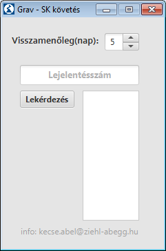
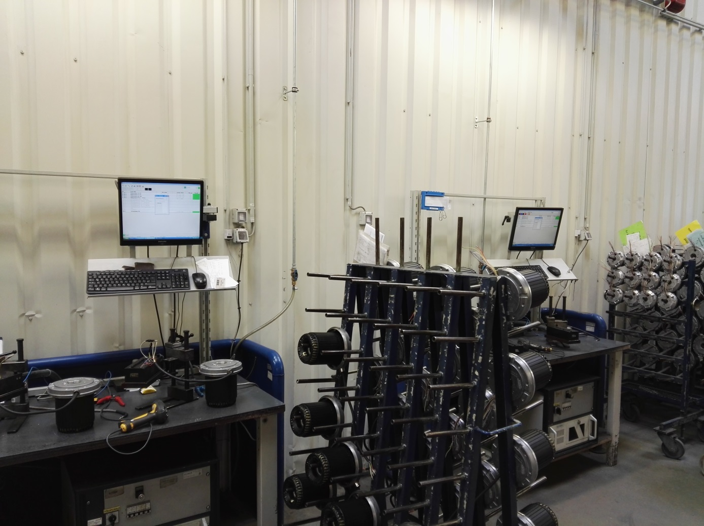
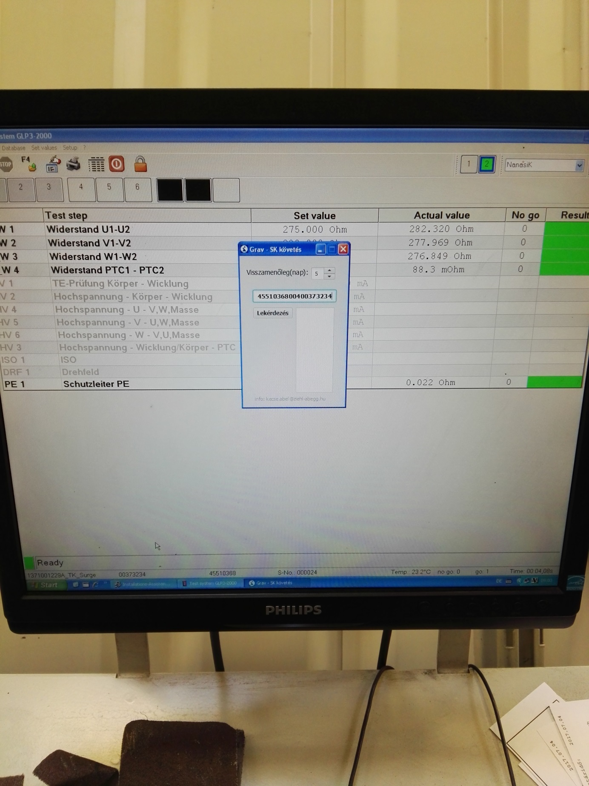

In den End-Testern war es möglich, einen Motor mehrmals zu Messen, während er mit der Identifizierung eines anderen Motors gemessen wurde. Es könnte Motoren geben, bei denen die Arbeiter überhaupt keine endmessung durchführen und nicht nachvollziehen können, welche Motoren nicht gemessen wurden.
Der tester arbeitet, indem er die Motorgravur scannt und die Messung diesem Bezeichner zuweist. Der Bezeichner ist ein string, bei dem die ersten 8 Ziffern die berichtsnummer sind, die nächsten 3 der motorindex(Z. B. bei 80 Bestellungen erhält jeder Motor einen index bis zu 1-80) und dann die Artikelnummer.
Das problem ist, dass es möglich ist, eine Messung ohne Scannen zu starten, und dann misst das Messprogramm automatisch einen index, der höher ist als der größte gemessene motorindex(der ein anderer Motor sein kann), und dann wird ein Motor ohne Messung mit seiner Kennung verbunden sein.(, so dass ein Motor hat 2 Messungen (oder mehr)
Es war nicht möglich, zu sagen, ob ein Motor gemessen wurde oder ein anderer Motor mehrmals gemessen wurde(oft wird ein Motor von den Arbeitern neu gemessen, wenn Sie den Motor nicht an Klemmenblock anschließen)
Der Zweck des Programms ist zu überprüfen, welche Motoren diejenigen sind, auf die eingraviert wurden, aber haben keine endgültige Messung.
Zurück (Tages -) roller:
Hier können Sie festlegen, wie viele Tage zurück zum Programm gehen, um die Datenbank des Graveurs zu überprüfen. Wenn Sie einen Fehler bemerken Fenster, ich kann nicht finden den Bericht Nummer! es könnte auch das Ergebnis
von nicht genug Tagen der Suche sein.
Zum Beispiel, wenn die Motoren am Freitag graviert sind, aber die endgültige Messung fand nur am Montag statt, dann muss 4 Tage für das Programm festgelegt, um die berichtsnummer zu finden.
Wenn Sie kein Zeitintervall auswählen, suchen Sie standardmäßig die Datenbank 5 Tage zurück.
Query-Taste: startet die Abfrage, endet mit einem Meldungsfenster über die Anzahl der nicht markierbaren engines, oder wenn die gravirted engines alle gemessen werden, bestätigen.
Das Programm läuft an 3 Stationen:


